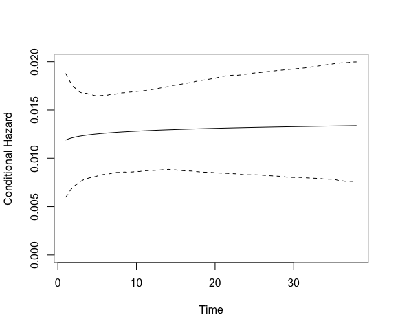

spduration implements a split-population duration model for duration data with time-varying covariates where a significant subset of the population or spells will not experience failure.
# Prepare data data(coups) dur.coups <- add_duration(coups, "succ.coup", unitID="gwcode", tID="year", freq="year") # Estimate model model.coups <- spdur(duration ~ polity2, atrisk ~ polity2, data = dur.coups, silent = TRUE) summary(model.coups)
## Call:
## spdur(duration = duration ~ polity2, atrisk = atrisk ~ polity2,
## data = dur.coups, silent = TRUE)
##
## Duration equation:
## Estimate Std. Error t value Pr(>|t|)
## (Intercept) 4.00150 0.23762 16.840 < 2e-16 ***
## polity2 0.20588 0.03037 6.779 1.21e-11 ***
##
## Risk equation:
## Estimate Std. Error t value Pr(>|t|)
## (Intercept) 6.5278 3.2556 2.005 0.0449 *
## polity2 0.8966 0.4084 2.196 0.0281 *
##
## Estimate Std. Error t value Pr(>|t|)
## log(alpha) -0.03204 0.11899 -0.269 0.788
## ---
## Signif. codes: *** = 0.001, ** = 0.01, * = 0.05, . = 0.1plot(model.coups, type = "hazard")

Install
- the latest released version from CRAN:
install.packages("spduration")
- the latest development version:
library(devtools) install_github("andybega/spduration")
Contact
- submit suggestions, bugs, issues, questions at: https://github.com/andybega/spduration/issues
- email: adbeger+spduration@gmail.com